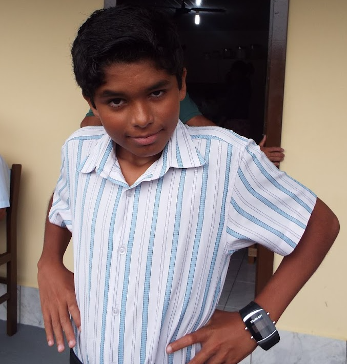

Foto do dia
Começando a contagem regressiva!
Uma pergunta importante, apresentada em um dia que já está deixando todo mundo curioso — e o Wigor provavelmente um pouquinho nervoso.

Começando a contagem regressiva!
...e garantir que a ansiedade chegue ao Salão antes dele. 😂 Calma, Wigor: faltam apenas alguns dias, várias horas, muitos minutos e segundos demais!